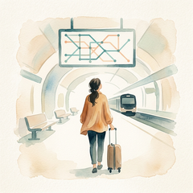

파워J의 숙소 동선표
당일치기·1박2일·2박3일, 가 볼 곳·먹을 곳·묵을 곳을 먼저 보여 드려요.
최신 스토리라인 2편
- 제주도 2박3일 코스, 금요일 오전 제주국제공항에 내리면 이 순서로제주2박3일2026-10-26 게시
- 오사카 3박4일 일정, 월요일엔 니시노마루 정원이 쉬어서 목요일 출발로오사카3박4일2026-10-25 게시
도시별 동선
국내
일본
운영 원칙
- 직접 다녀온 후기가 아니에요. 공식 안내(관광공사·지자체·철도·공항)로 확인한 동선만 정리해요.
- 시간·요금·휴무에는 확인한 날짜와 기관을 같이 적어요. 90일마다 다시 확인해요.
- 숙소는 이름보다 위치(역·공항까지의 이동)로 골라요. 이름은 공식 근거가 있을 때만.
- 이 페이지에는 광고·제휴 링크, 쿠키, 방문 추적이 없어요.
사진·그림 출처
카드와 글의 사진은 한국관광공사 공공누리 제1유형, CC0·퍼블릭 도메인, CC BY, Pixabay 사진만 써요. 사진마다 촬영자와 라이선스를 카드 오른쪽 아래·캡션 끝·글 끝에 적어요. 수채화 그림은 AI로 그린 분위기 그림이에요.
- 이 페이지 그림: AI 수채화(분위기 그림, 실제 장소 아님)